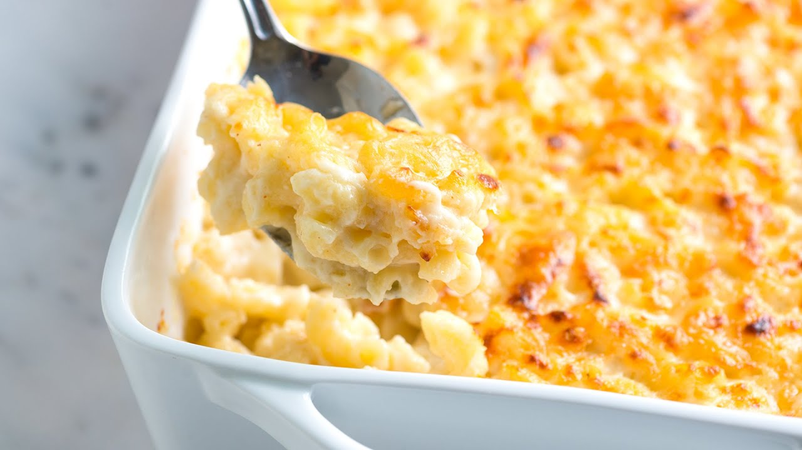

Mac and Cheese

Description
Baked macaroni and cheese is my favorite food in the world, and a great comfort food for just about anyone!
This recipe, specifically, is the recipe for "Villainous Mac and Cheese", written by the rapper MF DOOM!
A great artist, with great taste in food! If you love super cheese mac and cheese, you'll love it! Give it a try
with the recipe below!
Ingredients
- elbow pasta (4 cups)
- butter (1 stick)
- bread crumbs (1 cup)
- salt (1/2 tsp)
- pepper (1/2 tsp)
- sugar (1 tbsp)
- fresh minced garlic (1 clove)
- milk (2 cups)
- colby or monterey jack cheese (8 oz)
- shredded cheddar cheese (4 cups)
Steps
- Cook the macaroni until done, with sugar and garlic added to the water.
- Drain cooked macaroni in a strainer.
- Place the macaoni, butter, salt, pepper, milk, colby/monterey jack cheese and 3 cups cheddar cheese into the pot.
- Bring to a slow boil, then slowly add bread crumbs.
- Cover everything with foil, cook for 45 minutes at 350 degrees.
- Uncover, then add remaining cheese to the top.
- Bake uncovered for another 15 minutes.